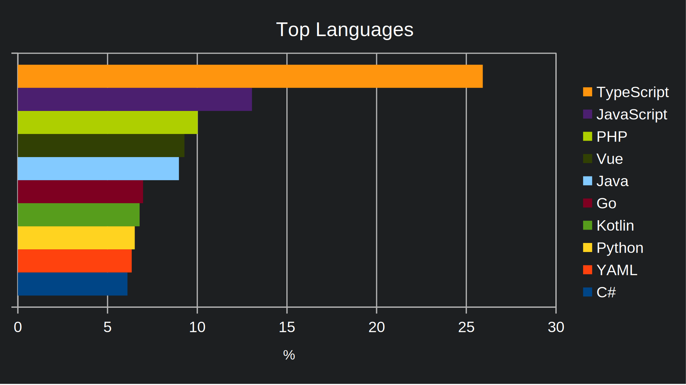
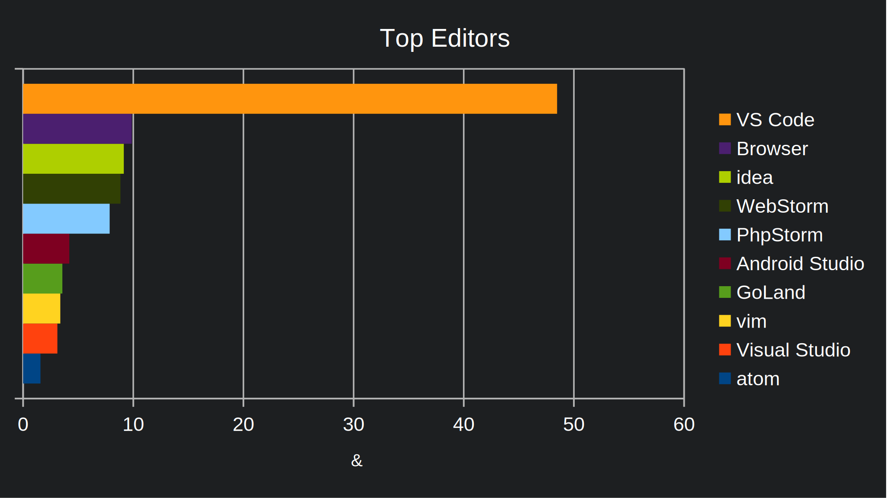
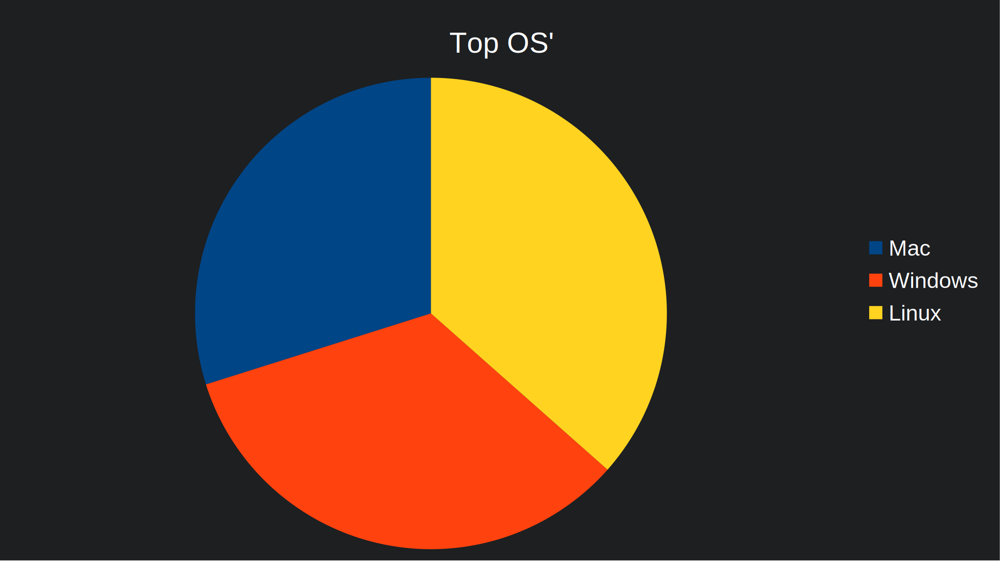

It has been a wild year and that applies to Wakapi as well. Now, that 2021 is almost over, I want to drop a couple of quite interesting statistics about Wakapi 🤓.
Coding Stats on Wakapi.dev
- A total of 4,884,871 heartbeats were tracked this year
- They make a total of 50,746 hours (5.89 years) of coding time in 2021
- If every heartbeat is around 225 bytes of JSON, this would be approx. 1,245 MBytes of incoming traffic on the server
- Our user base grew by 311 to a total of 440 users
Top Languages
Most used programming languages are TypeScript (26 %), JavaScript (13 %) and PHP (10 %)

1 | select `key` as language, sum(total) / 60 / 60 as total |
Top Editors
Most used editors / IDEs are VS Code (49 %), the Browser (10 %) (which is not actually an editor, but there is chrome-wakatime) and IntelliJ (idea) (9 %).

Top Operating Systems
Operating systems distribute more or less equally among Linux (36 %), Windows (34 %) and MacOS (30 %).

Open Source Project

The Wakapi open source project itself did big steps forward, too, and the release of version 2 is just around the corner 🚀.
Some statistics:
- 351 commits were added
- 155 issues on GitHub have been resolved
- 633 stars were given in total (all time)
- 9945 lines of code were added, making a total of 15316
1
cloc --include-lang=Go,JavaScript,HTML,Python --exclude-dir=node_modules .
- Around 176,000 lines have changed in total this year (including generated code, though)
Thanks a lot to all contributors!
Personal Stats
My personal coding stats look a bit different. I coded mostly in Java, followed by Go and VueJS. My total coding time this year is an astonishing amount of 899 hours (~ 5.4 weeks), which I spent 98 % of the time on Linux. My used IDEs are distributed more or less equally among VS Code, IntelliJ, GoLand and PyCharm.

Fun fact: during that time, I drank a total of 867 cups of coffee ☕️😱.